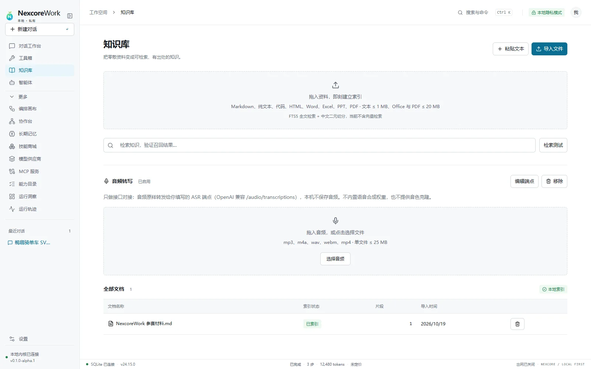
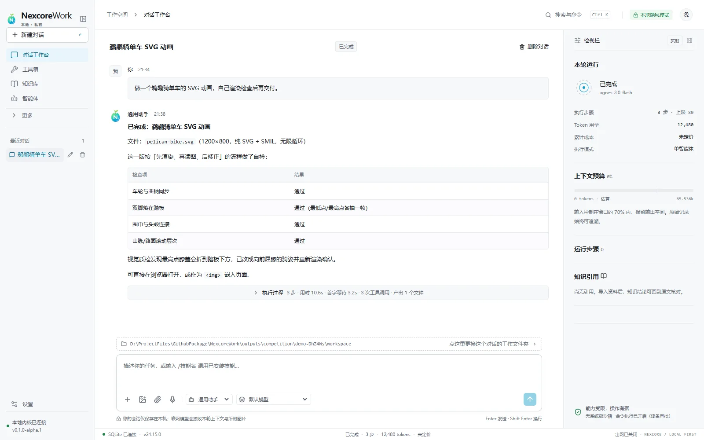
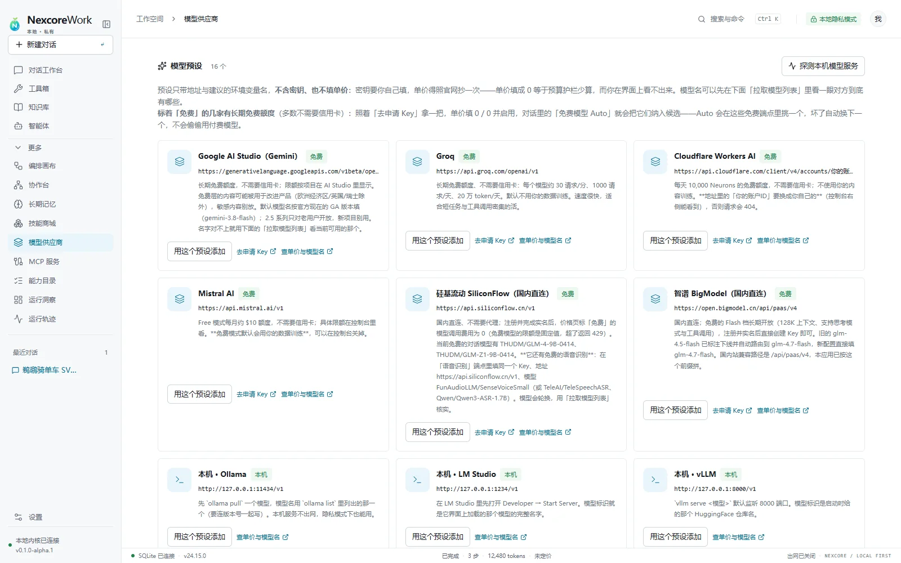
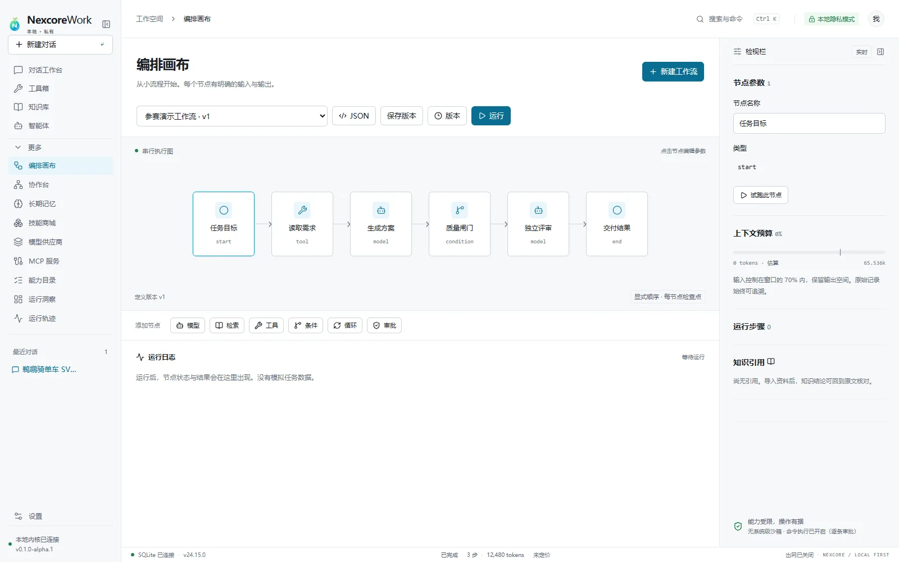
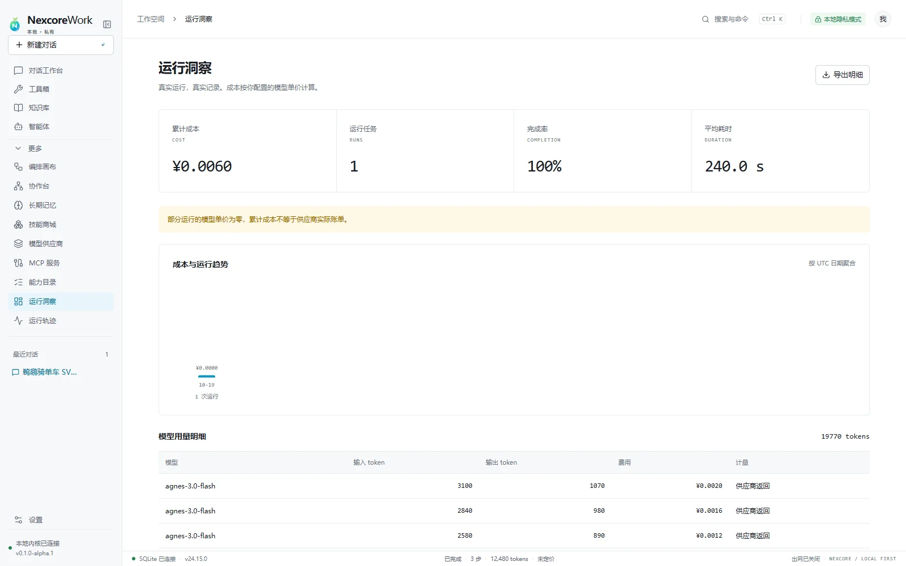

知识库
本地全文检索，回答带来源，引用能回到原文。
LOCAL-FIRST AGENT WORKSPACE
NexcoreWork 把模型、工具、知识、记忆和工作流收进一台电脑。每一步都能看见，每一个结果都能复核。

数据保存在本机 · 模型自由选择 · 过程可追溯
从一句话，到一张工作台
真正难的从来不是“生成一段文字”，而是让智能体理解工作区、调用正确的工具、在风险动作前停下来，再把结果留在可以继续工作的状态里。

每次新对话先确定项目目录，文件读写与项目记忆有明确边界。
模型、工具、技能与工作流围绕同一份本地数据协作。
步骤、耗时、工具、文件变化和审批全部进入运行轨迹。
执行不是黑箱
模型说“已经完成”不算完成。工具是否真的执行、文件改了多少行、哪一次操作经过审批，全部可查。
文件report.html+186-0
模型可以换
接入任意 OpenAI 兼容端点，也可以用内置免费模型。Auto 会先判断这一轮要做什么，再按能力、工具可靠度和实际首字延迟选模型。
01免费端点优先，不偷偷使用付费模型
02端点失败自动切换，预算在请求前拦截
03图片、对话、语音各走自己的能力路由

一张能力地图

本地全文检索，回答带来源，引用能回到原文。
每轮先写请求，再执行；空闲五分钟后自动压缩成可继续使用的结论。

研究、实现、审核、验证可以接力；每次保存都有版本，断点可以继续。
从生成文档到代码检查、网络研究、语音转写与视觉自检，能力统一登记、可停用、可审计。
你的电脑，就是边界
服务只监听 127.0.0.1。对话、知识、设置与工作区默认不离开你的电脑。需要联网时，由你明确授权。

交付不是一句“做完了”
WINDOWS 10 / 11 · X64
下载 NexcoreWork，把模型、工具、知识与记忆放到同一张本机工作台。